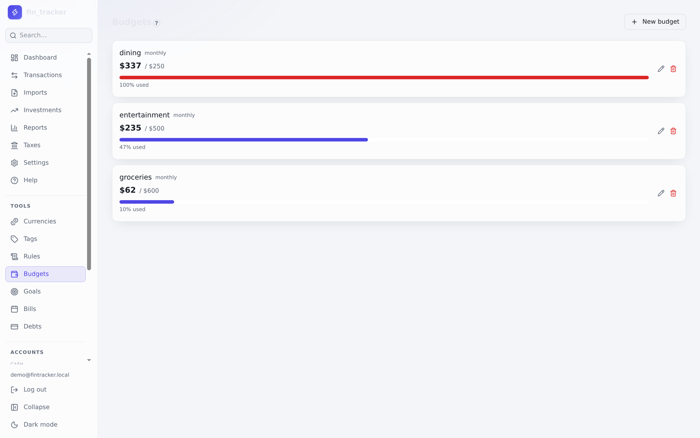

Reports & budgets
Spending insights, auto-detected subscriptions, monthly budgets.
Spending insights
Reports breaks spending down by category and month so you can see where the money actually goes. Change the date range to compare periods; every figure drills from the same transaction feed, so reports always agree with Transactions.

Subscriptions find themselves
Recurring payments are detected automatically from payees charged 2 or more times — there is nothing to configure. Each shows frequency, average amount, and projected monthly/yearly cost. To stop tracking one, remove or rename the underlying payee rather than looking for a delete button.
Budgets track one category per month
Create a budget per category with a monthly amount; cards show spent-vs-allowed at a glance. Editing a budget amount never moves transactions — it only changes the yardstick.
